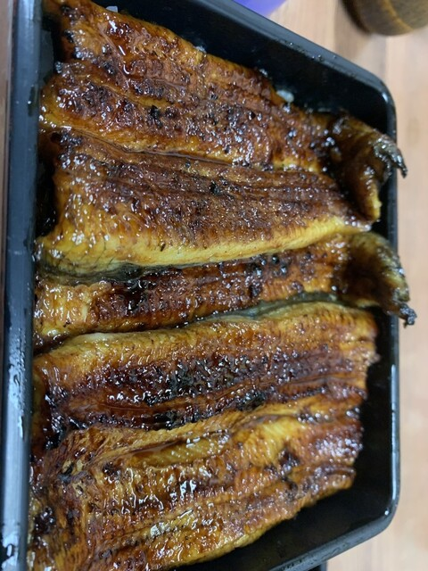

沼津・旭町の老舗うなぎ割烹。継ぎ足しのタレと炭の香りを、落ち着いた佇まいで。
備長炭の遠火でふっくらと。香ばしく、とろけるような食感に焼き上げます。
長年受け継ぐ秘伝のタレ。きれいな照りと、甘すぎない味わい。
外観・店内ともに静かな佇まい。大切な日のお食事にも。

備長炭でじっくり焼き上げた鰻に、継ぎ足しのタレ。ふっくらと香ばしい蒲焼を、ご飯とともに重箱で。鮮度のよい肝の肝吸いも好評です。
ご予約を承ります。記念日やご接待にも、落ち着いた鰻のひとときを。